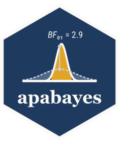

Report convergence diagnostics in one sentence
Source:R/convergence.R
apa_convergence.Rdapa_convergence() summarises R-hat, the bulk and tail effective
sample sizes and the divergent transitions of every sampled quantity
into the sentence a Method or Results section quotes:
*R̂* ≤ 1.004, bulk ESS ≥ 1,240, tail ESS ≥ 980, no divergent transitions.
Usage
apa_convergence(x, ...)
# S3 method for class 'apabayes_tidy'
apa_convergence(x, ..., rhat = 1.01, ess = 400, digits = 3, markup = NULL)
# Default S3 method
apa_convergence(x, ..., rhat = 1.01, ess = 400, digits = 3, markup = NULL)Arguments
- x
A table of type
"diagnostics"fromapa_tidy_diagnostics(), or any objectapa_tidy_diagnostics()accepts.- ...
Tidy method: must be empty. Default method: passed to
apa_tidy_diagnostics()(variables =).- rhat
The R-hat threshold, a single number of 1 or more.
- ess
The threshold for both effective sample sizes, a single positive number.
- digits
Decimals of R-hat.
- markup
NULLor one of"md","latex","typst","plain".NULLusesgetOption("apabayes.markup"), then the knitr output format, then"md". Decides the minus sign (U+2212 outside"plain") and the infinity symbol.
Value
An apa_results object whose full_result is the sentence,
with estimate NA, table the whole diagnostics table, and two
further elements: passed (logical) and summary, a one-row data
frame with the number of variables, and per diagnostic the number of
non-missing values, the extreme and the number at the threshold, the
divergence count (NA when not recorded) and both thresholds.
The sentence
Each diagnostic is stated over its non-missing values. When none
reaches its threshold the extreme is given as a bound: the largest
R-hat rounded up to digits decimals and the smallest ESS rounded
down to an integer, so that ≤ and ≥ hold for the unrounded
numbers too. When some do, the part says how many and gives the
extreme: 2 of 13 *R̂* ≥ 1.01, maximum 1.018, 9 of 13 bulk ESS ≤ 400, minimum 152. An R-hat equal to rhat, or an ESS equal to ess,
counts as reaching it (Vehtari et al., 2021, recommend R-hat below
1.01 and ESS above 400).
Divergent transitions are stated as a count (no divergent transitions, 3 divergent transitions) when the table records them,
which apa_tidy_diagnostics() does for fits sampled with NUTS. Draws,
mcmc.list objects and tables stored without the record print no
divergence part, and the sentence then says nothing about divergences.
No word judging the fit is printed. The passed element is TRUE
when no part reports a value at a threshold and no divergent transition
was counted; it is for code, not for the text.
See also
apa_tidy_diagnostics() for the table, apa_rhat_ess() for
the diagnostics of one parameter.
Examples
t <- apabayes_tidy(
data.frame(
term = c("b_Intercept", "b_wt", "sigma"),
rhat = c(1.0012, 1.0036, 1.0008),
ess_bulk = c(1240.6, 1810, 2203), ess_tail = c(980.2, 1422, 1733)
),
type = "diagnostics", centrality = NA_character_,
ci_method = NA_character_, ci_level = NA_real_, divergences = 0L
)
apa_convergence(t)
#> *R̂* ≤ 1.004, bulk ESS ≥ 1,240, tail ESS ≥ 980, no divergent transitions
apa_convergence(t, ess = 1000, markup = "plain")
#> Rhat <= 1.004, bulk ESS >= 1,240, 1 of 3 tail ESS <= 1,000, minimum 980, no divergent transitions
z <- stats::qnorm(stats::ppoints(400))
draws <- posterior::as_draws_df(data.frame(
mu = 2 + z[order(sin(seq_along(z)))],
sigma = exp(0.3 * z[order(cos(seq_along(z)))])
))
apa_convergence(draws)
#> Warning: The ESS has been capped to avoid unstable estimates.
#> *R̂* ≤ 0.998, bulk ESS ≥ 502, 1 of 2 tail ESS ≤ 400, minimum 248